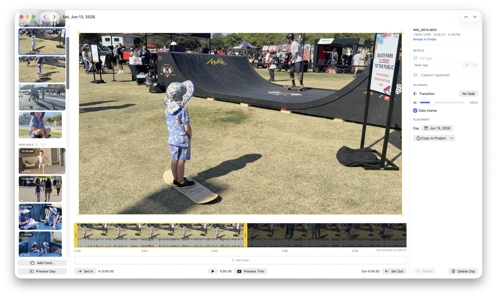

Beautiful video journaling,
on your Mac.
ClipDiary turns your everyday clips into a monthly memory video: the “1 second a day” idea, rebuilt as a native Mac app for the big screen.
Free · Open source

Three steps to a month you can watch
Point it at your photos
Add the folders where your videos and photos pile up. ClipDiary indexes them by capture day. Nothing is copied until you pick it.
Pick your moments
Open a day, flip through what you shot, and trim what’s worth keeping (one clip or several), then move on to the next day.
Create your video
Render any range (a month, a year, everything) with music, title cards, fades and date stamps, then save the MP4.
Built for making the video you actually want
The one-second-a-day idea, minus the limits, designed for editing comfortably on a desktop.
Filmstrip trimming
Drag in- and out-points on a filmstrip: cut the start and the end, frame-accurate.
Soundtracks
Lay music across a timeline, trim and fade each track, and hear it play as you edit.
Photos, cards & date stamps
Mix in stills, designed title cards, and the classic burned-in date stamp, or turn it off.
Calendar & source folders
Point it at a photo dump; each day shows what you shot so picking the keeper is quick.
Ergonomic by design
Every step works with the mouse and flies with the keyboard. Review a day, trim, add, and move on without breaking rhythm.
Import from 1SE
Bring in an existing 1 Second Everyday library from a video export or a data export.
Coming from 1 Second Everyday?
Import your existing library and keep going. ClipDiary just removes the limits.
Everything stays on your Mac
No accounts. No cloud. No telemetry. Your videos and photos are copied into a plain project folder you choose, and nothing ever leaves your machine.